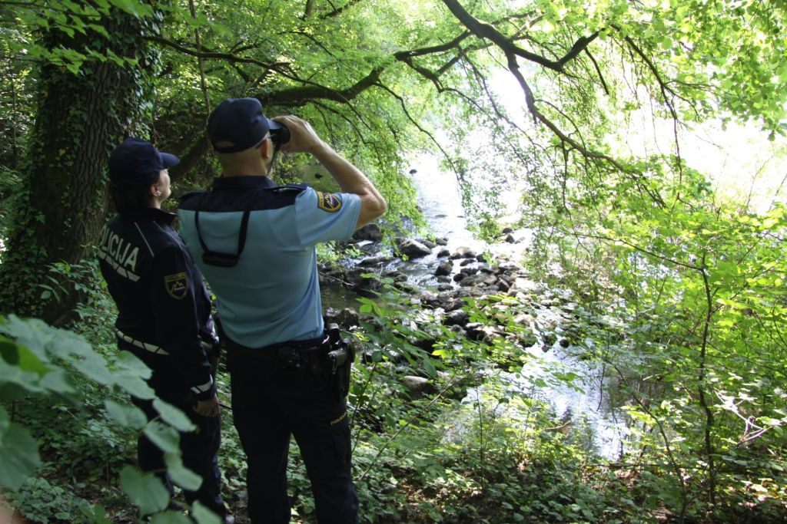

Zaradi izboljšanja vremenskih razmer na balkanski migrantski poti in zaznavanja povečevanja števila migrantov in tudi organizatorjev nezakonitih prehodov na tej poti, posledično pa s tem tudi večjega števila nezakonitih prehodov meje, bo policija v prihodnjih dneh poostrila nadzor zunanje schengenske meje s Hrvaško. V nadzoru bo policija poleg rednih patrulj uporabila tudi specializirane enote in razpoložljiva tehnična sredstva, ki jih ima na razpolago. Enako kot doslej bodo policistom pri odkrivanju in preprečevanju nedovoljenih migracij, odkrivanju organizatorjev nezakonitih prehodov in ostale čezmejne kriminalitete še naprej pomoč nudili tudi pripadniki Slovenske vojske. Od 1. januarja do 31. marca 2021 je policija skupno obravnavala 1.108 migrantov, ki so nedovoljeno prestopili zunanjo (schengensko) mejo, obenem pa tudi 126 migrantov, ki so se poskušali izogniti mejni kontroli. Med migranti prevladujejo državljani Afganistana (244), Bangladeša (172) in Turčije (132). Zaradi izognitve kontrolnim točkam za nadzor epidemije covida-19 je bil zaznan tudi znaten delež državljanov Hrvaške (103), ki so nedovoljeno prestopili državno mejo. Med najbolj obremenjenimi policijskimi upravami, kjer beležijo največ prijetih migrantov, izstopajo PU Koper (603), PU Maribor (254) in PU Novo mesto (114). Policija je v tem obdobju obravnavala tudi 52 kaznivih dejanj prepovedanega prehajanja meje ali ozemlja države po 308. členu Kazenskega zakonika ter podala kazenske ovadbe na pristojna tožilstva zoper 54 osumljencev. Prevladujejo državljani Slovenije, Kosova, Hrvaške ter Bosne in Hercegovine.
